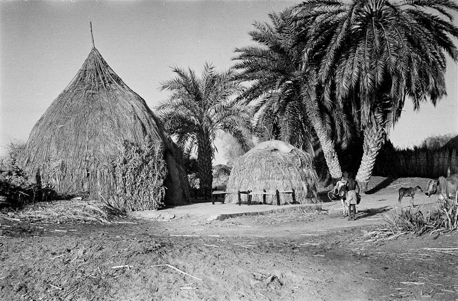

لوحة إدارة تجريبية
هذه نسخة ثابتة مناسبة لـ GitHub Pages. لإضافة وثيقة جديدة: ارفعي الصورة باسم جديد مثل doc_046.jpg، ثم أضيفي بياناتها داخل ملف data.js بنفس تنسيق الوثائق الحالية.
لا تضعي ملفات PDF داخل GitHub؛ اجعليها على Google Drive لاحقًا وضعي رابط التحميل فقط.
